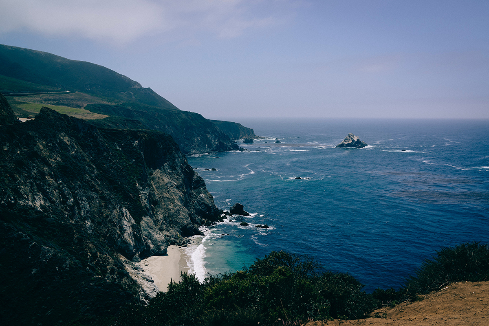
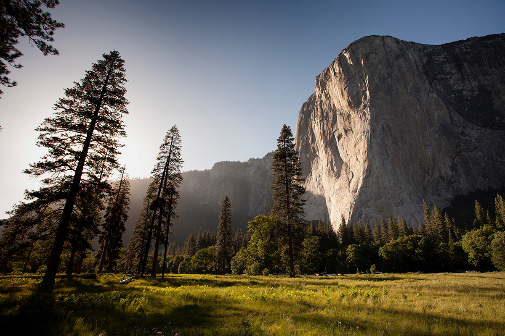
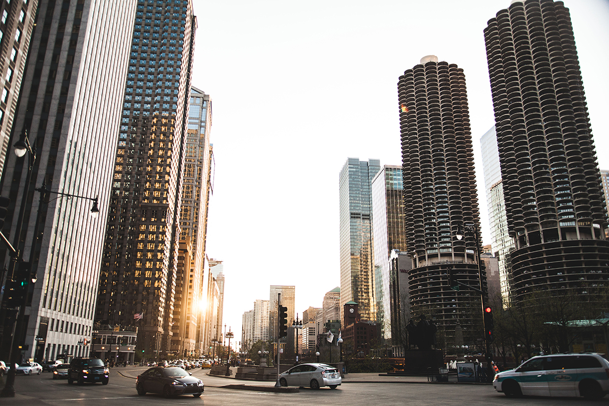

El paisaje ha sido uno de los motores de la evolución de la historia de la fotografía. La mirada fotográfica más antigua de la que tenemos conocimiento resulta ser un paisaje rural que Nicéphore Niepce nos legó en su Vista desde la ventana en Gras, 1826. Vista urbana o vista natural los pioneros documentaron el desarrollo social de nuestras comunidades partiendo de aquellos paisajes muertos, donde nadie parecía habitar, dando cuenta de las limitaciones técnicas de la época.
A estas propuestas fotográficas siguieron otras donde los polos del realismo y del idealismo, una y otra vez alternaron su influencia. Ello condujo hasta un paisaje tamizado a través de las experiencias formales de las vanguardias o de las demostraciones de dominio del medio de Ansel Adams. La visión moderna del espacio encuentra sus precedentes en la Historia de la fotografía, pero sobre todo en el cambio a la postmodernidad ofrecido por las aportaciones de William Eggleston, especialmente con su uso del color y su preocupación por trasladar la atención fotográfica a ese ningún-lugar-en-particular del que tanto han bebido las diversas hornadas de los artistas europeos de la Nueva Topografía, durante los años 1980 y 1990.
Fuente: Wikipedia
El autor es la persona que crea una obra, sea artística, literaria o científica.
En la literatura, el autor es una noción que pertenece al sistema literario, así como las nociones de lector, editor y obra literaria.
La noción de autor se ha transformado a lo largo del tiempo debido a las diferentes prácticas históricas y a la crítica literaria y teoría literaria;2 la concepción que tenemos de ella en la actualidad; tiene sus orígenes en el Renacimiento; y está relacionada con términos de originalidad, autoridad, y propiedad moral o intelectual y económica.
El término proviene del latín auctor, -ōris, "aumentador, productor, creador, autor, padre, abuelo, antepasado, fundador".